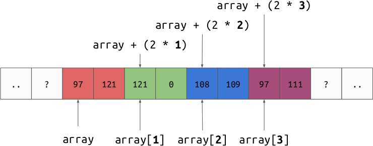
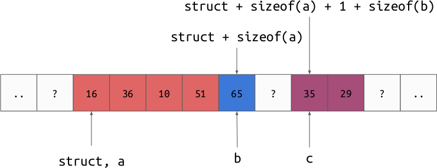

Arrays and Structs¶
Arrays¶
In most real world programs, we are less interested in storing a single number
at a time and more interested in storing a sequence of numbers. The easiest way
to store more than one number is to just stick them next to each other in
memory. A region of memory which holds a sequence of values
of the same type is called an “array”. In memory, the array of 1
byte integers [108, 109, 97, 111] would look like:

In order to access the elements of the array, we would just add the offset to the base address of the array. This is where the 0-indexed convention for lists comes from, the first element is 0 elements away from the start.
The advantage of packing the elements next to each other in this way is that we can now refer to the entire sequence with just a pointer to the first element. This means that we can semantically move a lot of data just by moving a single integer.
Multi-Byte Values in Arrays¶
Arrays may contain multi-byte values. Just like arrays of single-byte values, the elements are laid out next to each other in memory.
In order to access element \(n\) of an array at address \(p\) with elements of size \(s\) we just read the value at the address: \(p + sn\).
Structs¶
Another common low-level data structure is called a “struct”, short for “structure”. Structures are a fixed length, ordered collection of potentially different types of values. A structure works similar to an array, where we just pack the values next to each other in memory. Structures are useful because, just like with arrays, they allow us to semantically move many related values with a single pointer.
Imagine we want to represent a structure with the following fields:
{
int32 a;
int8 b;
int16 c;
}
The memory for a single instance of this struct may look like:
Just like we can compute the address of any given element in an array from the
address of the first value and the index, we can compute the address of any
member of the structure from just the first value. Instead of accounting for an
index, we just need to know through some side-channel method what the expected
offset is. The idea is that if we lay out the data at a particular offset from
the first element when we write it, then code that requires just the c field
can be hard coded to read \(p + 6\) and the value will be there. There is
nothing that enforces that this is true, it is just a convention for arranging
memory.
The reason that the 6th byte is unused is that we may want to keep all of our
int16 (2 byte integer) values at an address that is a multiple of 2. Some
hardware operations are faster when reading values that are “aligned” to a
multiple of their size. We will discuss this more later.
Multi-Dimensional Arrays¶
Memory is intrinsically one dimensional because the machine natively addresses memory with a scalar integer. Therefore, in order to store a semantically multi-dimensional array we need to store some flattening of the data and design a mapping from coordinate to a single address. The general way to do this is to think of a multi-dimensional array as an “array of arrays”, or an array whose elements are themselves arrays. An array just stores its values one after the other in memory, so a multi-dimensional array can be stored by laying out a sequence of arrays of progressively smaller dimensionality.
For example, let’s consider a 2d array of shape (6, 3), or 6 rows by 3
columns:
There are two ways we can define this as an “array of arrays”:
- a length 6 array of length 3 arrays, a collection of rows
- a length 3 array of length 6 arrays, a collection of columns
Row Order¶
Row order is where the array is arranged in memory as a collection of rows. This is also called “C order” because the C programming language often uses arrays arranged this way.

The formula to get element \((r, c)\) is:
Column Order¶
Column order is where the array is arranged in memory as a collection of columns. This is also called “F order” or “Fortran” order because the Fortran programming language often used arrays arranged in this way.

The formula to get element \((r, c)\) is:
Warning
Be careful not to confuse “C order” with column order, they are opposites!